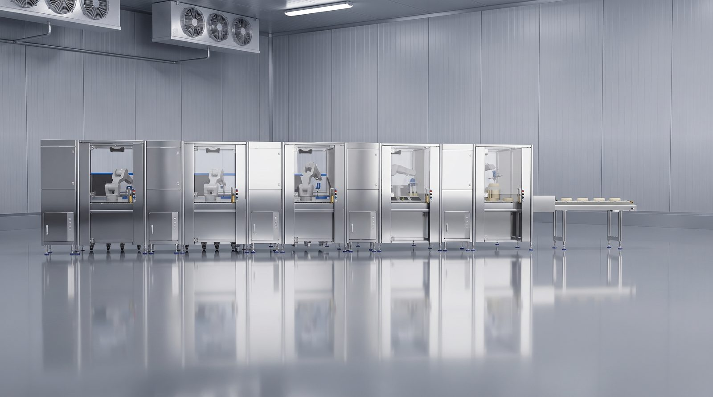
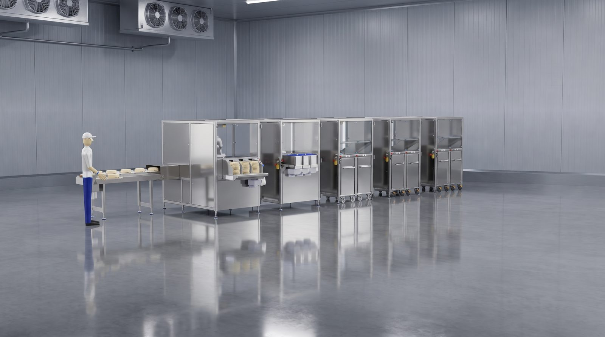
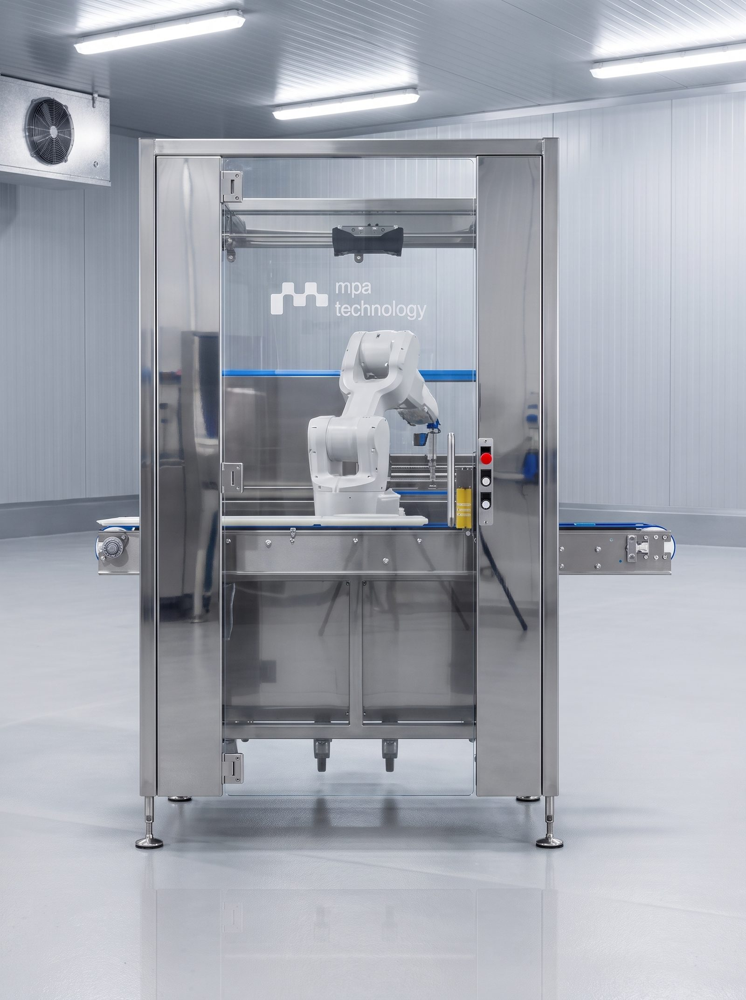
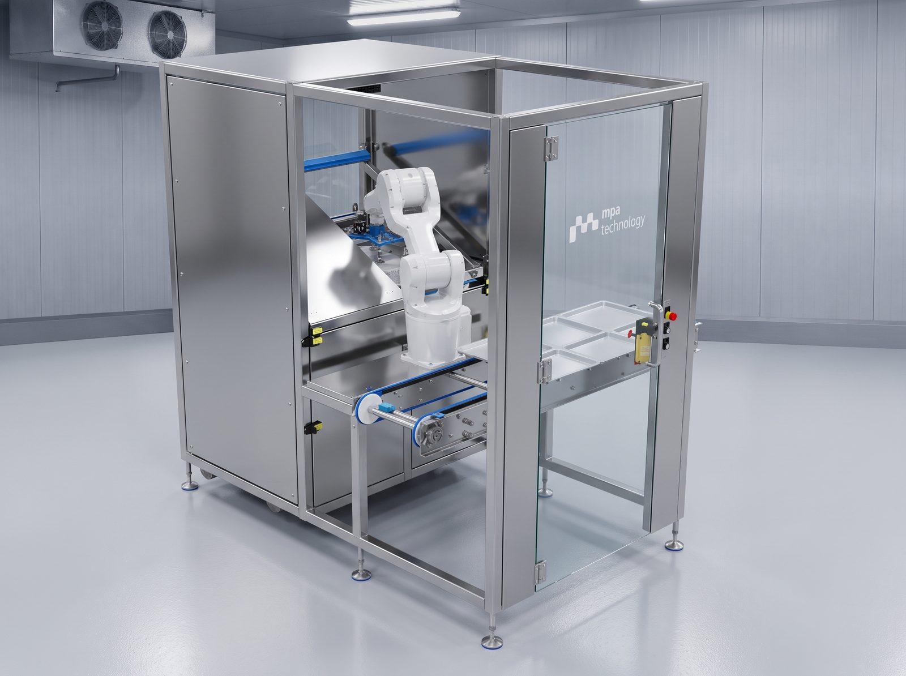
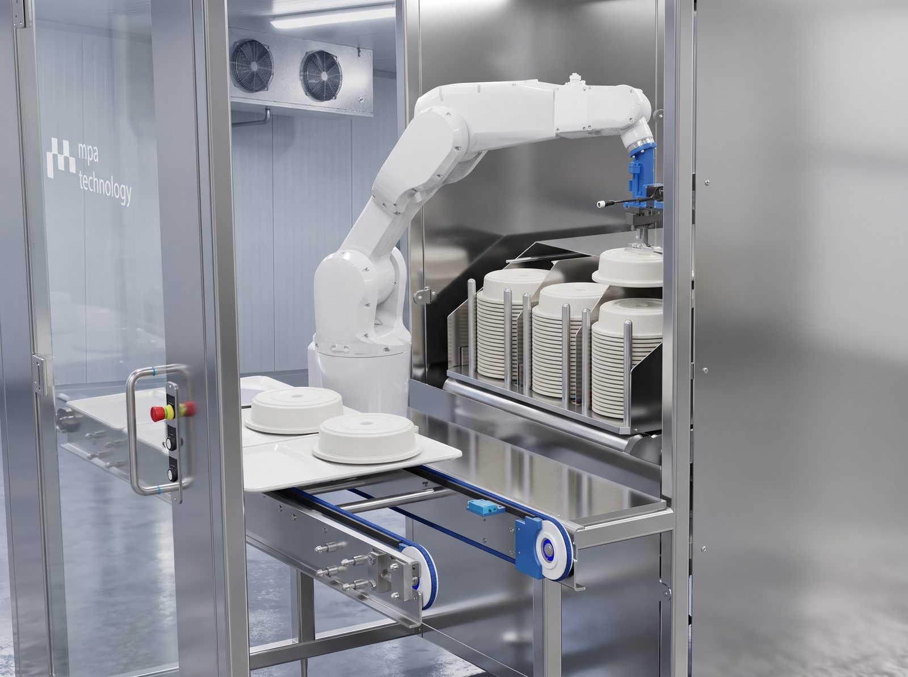
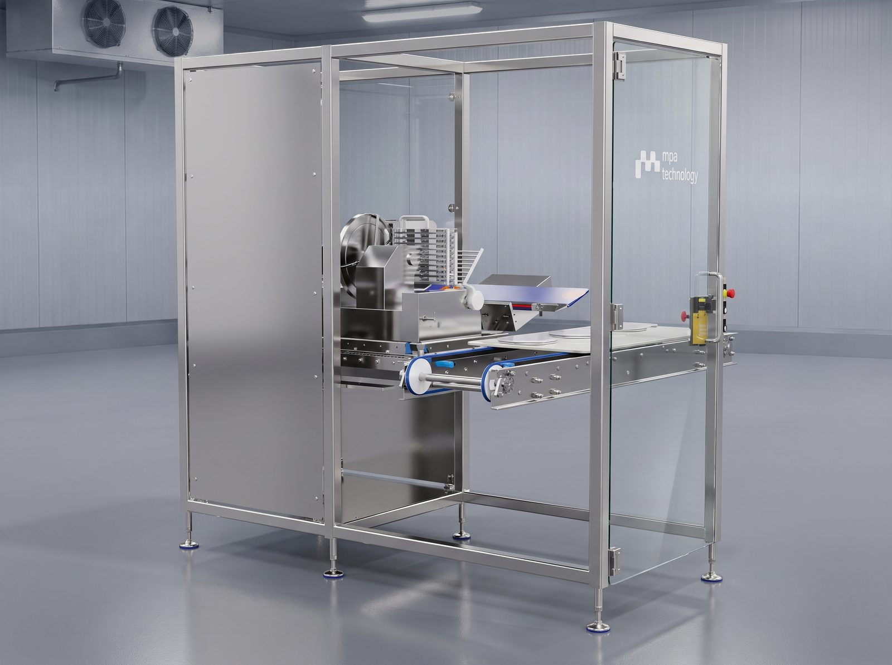
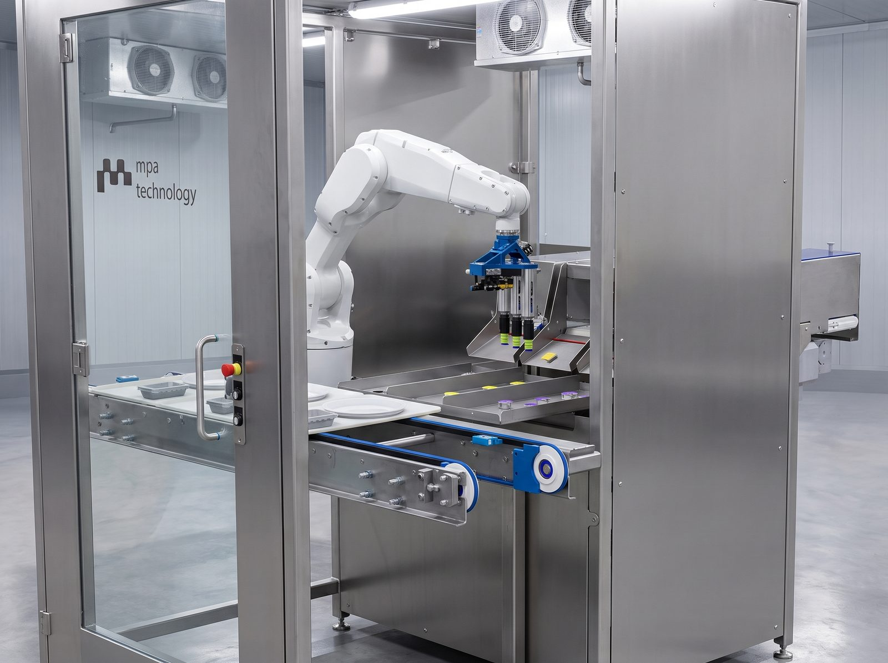
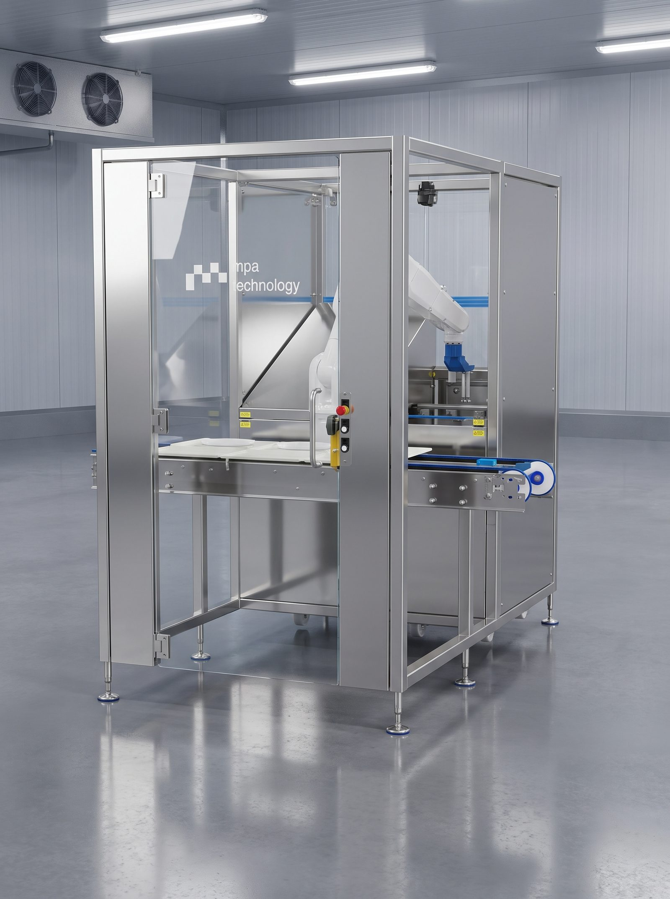
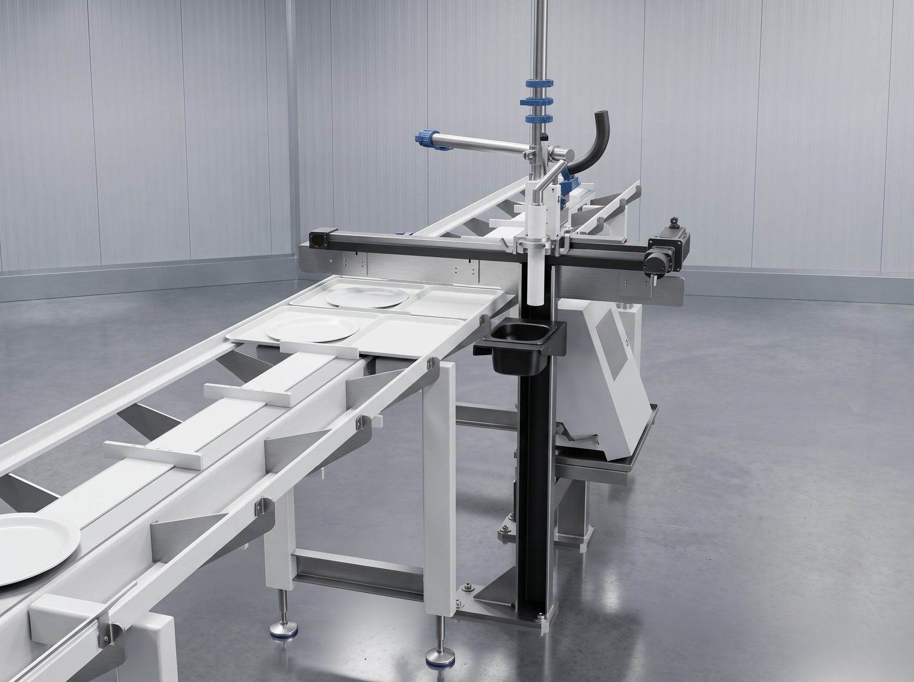

Modular, hygienisch, für den Kühlkettenbereich ausgelegt – von der einzelnen Zuführungsstation bis zur kompletten Linie.
Eine modulare, hygienisch ausgelegte Linie zur automatisierten Essenszusammenstellung – speziell für den Einsatz in Kühlhäusern konzipiert und um beliebige Module erweiterbar.


Jedes Modul übernimmt eine eigene Zuführungsaufgabe – vom Teller bis zur Portionspackung – und lässt sich einzeln oder als komplette, aufeinander abgestimmte Linie einsetzen. Alle Stationen teilen sich ein einheitliches, hygienisch reinigungsfreundliches Gehäusekonzept aus Edelstahl.
Die Linie ist auf den Dauerbetrieb im Kühlbereich ausgelegt und lässt sich um weitere Module – etwa eine Bedruckungsstation – erweitern, ohne bestehende Stationen zu verändern.
Vereinzelt Teller und übergibt sie lagegenau an die nachfolgende Station.

Führt Teller vereinzelt und lagegenau der nachfolgenden Station zu. Edelstahlgehäuse mit Sichtfenster, für den Dauerbetrieb im Kühlbereich ausgelegt.
Übernimmt Tabletts aus dem Magazin und übergibt sie im festen Takt.

Übernimmt Tabletts aus dem Magazin und übergibt sie im festen Takt an das Förderband. Baugleiches Gehäusekonzept wie die übrigen Module für einheitliche Wartung.
Setzt die Glosche per Robotergreifer präzise auf das durchlaufende Produkt.

Setzt die Glosche mittels Robotergreifer präzise auf das durchlaufende Produkt. Der Sechsachs-Roboterarm arbeitet hinter einer Glastür, gut einsehbar für Wartung und Reinigung.
Übernimmt geschnittene Wurst- und Käsescheiben direkt von der Schneidmaschine.

Nimmt geschnittene Wurst- und Käsescheiben direkt von der Schneidmaschine auf und legt sie lagegenau auf das Band. Kompakte Bauweise für die Integration direkt an der Schneidstation.
Führt kleine Portionspackungen aus mehreren parallelen Kanälen zu.

Führt kleine Portionspackungen (z. B. Konfitüre, Margarine) aus drei parallelen Kanälen zu. Transparente Abdeckungen halten die Zuführung sauber einsehbar.
Vereinzelt und positioniert kleine Schälchen für die nachfolgende Befüllung.

Vereinzelt und positioniert kleine Schälchen für die nachfolgende Befüllung. Gleiches Bedienkonzept wie die übrigen Zuführungsmodule.
Bedruckt das durchlaufende Tablett mit einer Kennzeichnung.

Bedruckt das durchlaufende Tablett mit einer Kennzeichnung, während sich der Druckkopf auf einer Führungsschiene über das Produkt bewegt. Lässt sich an beliebiger Stelle in die Linie integrieren.
Ob einzelnes Modul oder komplette Linie – wir beraten Sie zu Aufbau, Integration und Erweiterung für Ihren Kühlkettenbereich.
Ansprechpartner: Vorname Nachname
E-Mail: info@mpa-technology.example
Telefon: +49 (0) 00 000000
Adresse: Straße Nr., PLZ Ort